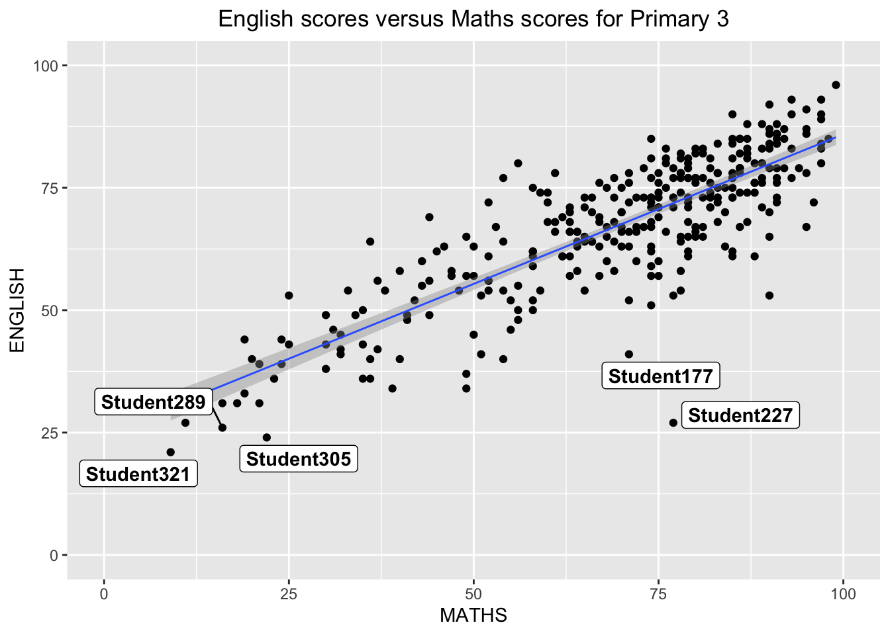
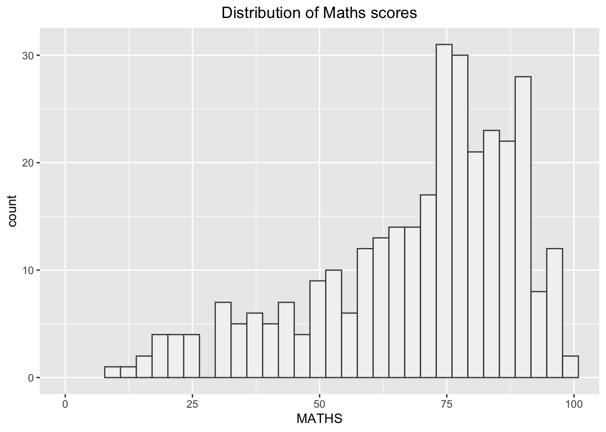
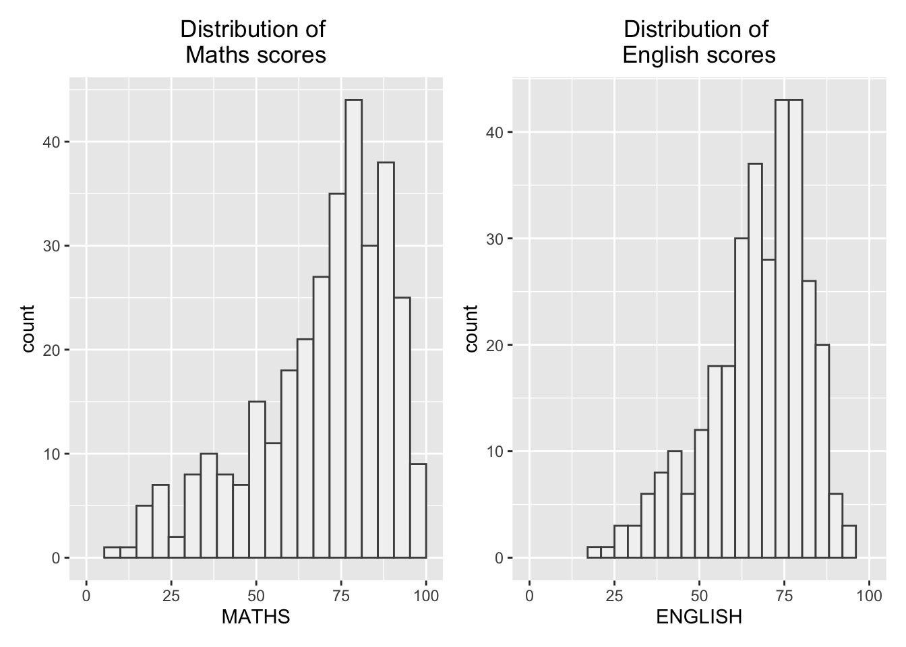
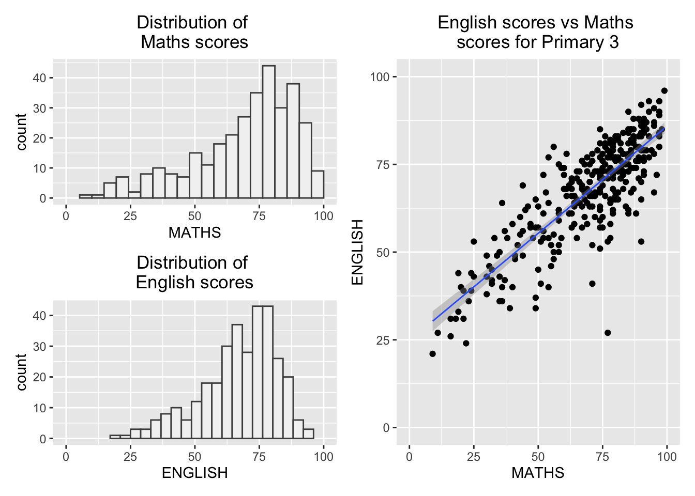

pacman::p_load(ggrepel, patchwork, ggthemes, hrbrthemes,tidyverse) Hands-on_Ex02
Getting started
- Using p_load() of pacman package to load the required libraries
- Importing data
exam_data <- read_csv("data/Exam_data.csv")Rows: 322 Columns: 7
── Column specification ────────────────────────────────────────────────────────
Delimiter: ","
chr (4): ID, CLASS, GENDER, RACE
dbl (3): ENGLISH, MATHS, SCIENCE
ℹ Use `spec()` to retrieve the full column specification for this data.
ℹ Specify the column types or set `show_col_types = FALSE` to quiet this message.Plotting the graph with ggrepel
1) English scores vs Maths scores for Primary 3
Output:
ggplot(data=exam_data,
aes(x= MATHS, y=ENGLISH)) +
geom_point() +
geom_smooth(method=lm, size=0.5) +
geom_label_repel(aes(label = ID), fontface = "bold") +
coord_cartesian(xlim=c(0,100), ylim=c(0,100)) +
ggtitle("English scores versus Maths scores for Primary 3") +
theme(plot.title = element_text(hjust = 0.5))
2) Distribution of Maths scores
Output:
ggplot(data=exam_data,
aes(x= MATHS)) +
geom_histogram(bins= 30, color= "grey30", fill = "grey95") +
coord_cartesian(xlim=c(0,100)) +
theme_grey() +
ggtitle("Distribution of Maths scores") +
theme(plot.title = element_text(hjust = 0.5))
2.1) ggtheme package
- Themes here
Output:
ggplot(data = exam_data,
aes(x=MATHS)) +
geom_histogram(bins=30, color= "grey30", fill = "grey95") +
coord_cartesian(xlim=c(0,100)) +
theme_economist() +
ggtitle("Distribution of Maths scores") +
theme(plot.title = element_text(hjust = 0.5))2.2) hrbthems package
- Themes here
Output:
ggplot(data = exam_data,
aes(x=MATHS)) +
geom_histogram(bins=20, boundary = 100,
color= "grey30", fill = "grey95") +
coord_cartesian(xlim=c(0,100)) +
theme_ipsum() +
ggtitle("Distribution of Maths scores") +
theme(plot.title = element_text(hjust = 0.5))2.2.1) hrbthems package: theme revision
- axis_title_size argument is used to increase the font size of the axis title to 18,
- base_size argument is used to increase the default axis label to 15, and,
- grid argument is used to remove the x-axis grid lines.
Output:
ggplot(data = exam_data,
aes(x=MATHS)) +
geom_histogram(bins=20, boundary = 100,
color= "grey30", fill = "grey95") +
coord_cartesian(xlim=c(0,100)) +
theme_ipsum(grid = "y",axis_title_size = 18, base_size =15) +
ggtitle("Distribution of Maths scores") +
theme(plot.title = element_text(hjust = 0.5))3) Creating multiple graphs
Create composite plot by combining multiple graphs. Firstly, to create three statistical graphics.
3.1) Distribution of Maths Scores
Output:
p1 <- ggplot(data = exam_data,
aes(x=MATHS)) +
geom_histogram(bins=20, boundary = 100,
color= "grey30", fill = "grey95") +
coord_cartesian(xlim=c(0,100)) +
ggtitle("Distribution of \nMaths scores") +
theme(plot.title = element_text(hjust = 0.5))3.2) Distribution of English Scores
Output:
p2 <- ggplot(data = exam_data,
aes(x=ENGLISH)) +
geom_histogram(bins=20, boundary = 100,
color= "grey30", fill = "grey95") +
coord_cartesian(xlim=c(0,100)) +
ggtitle("Distribution of \nEnglish scores") +
theme(plot.title = element_text(hjust = 0.5))3.3) English scores vs Maths scores for Primary 3
Output :
p3 <- ggplot(data=exam_data,
aes(x= MATHS, y=ENGLISH)) +
geom_point() +
geom_smooth(method=lm, size=0.5) +
coord_cartesian(xlim=c(0,100), ylim=c(0,100)) +
ggtitle("English scores vs Maths \nscores for Primary 3") +
theme(plot.title = element_text(hjust = 0.5))4) Plotting multiple graphs
Point to note:
Two-Column Layout using the Plus Sign +.
Parenthesis () to create a subplot group.
Two-Row Layout using the Division Sign /
Source
4.1) Combine 3.1 and 3.2
In this output, we will combine Distribution of Maths Scores and Distribution of English Scores.
Output :
p1 + p2
4.2) Combine 3.1, 3.2, and 3.3
Point to note:
“|” operator to stack two ggplot2 graphs,
“/” operator to place the plots beside each other,
“()” operator the define the sequence of the plotting.
Source
In this output, we will combine Distribution of Maths Scores, Distribution of English Scores, and English scores vs Maths scores for Primary 3 by stacking 3.1 and 3.2 on the left and 3.3 on the right.
Output :
p1 / p2 | p3`geom_smooth()` using formula = 'y ~ x'
4.3) Insert 3.2 into 3.3
In this output, we will insert Distribution of English Scores on top of English scores vs Maths scores for Primary 3.
Output :
p3 + inset_element(p2, left = 0.02, bottom = 0.6, right = 0.4, top = 1)`geom_smooth()` using formula = 'y ~ x'4.4) Add patchwork and ggtheme to 4.2
In this output, we will add patchwork and ggtheme.
Output :
patchwork <- p1 / p2 | p3
patchwork & theme_economist(base_size = 15) `geom_smooth()` using formula = 'y ~ x'